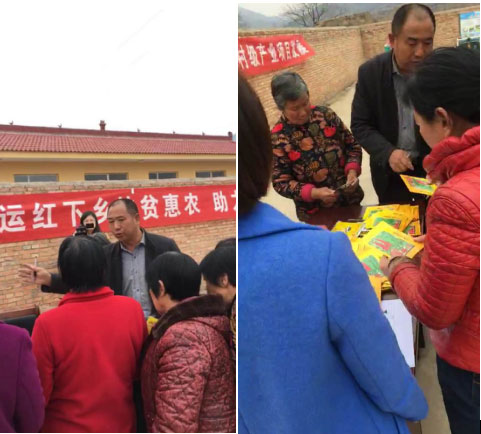
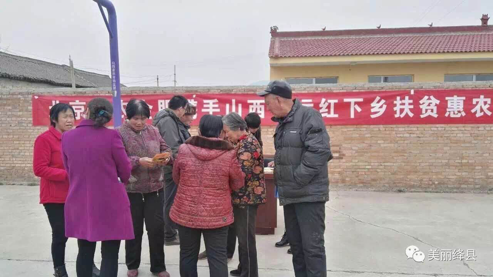
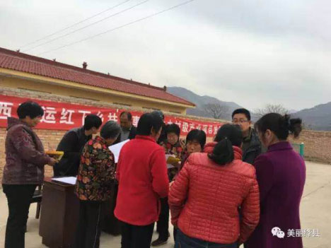
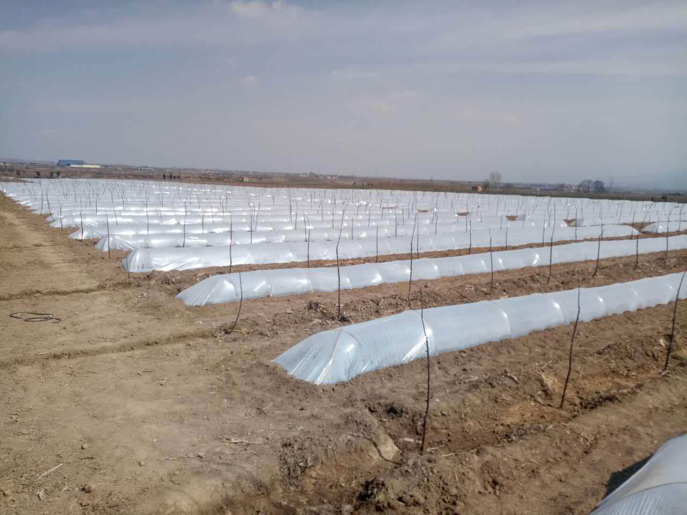
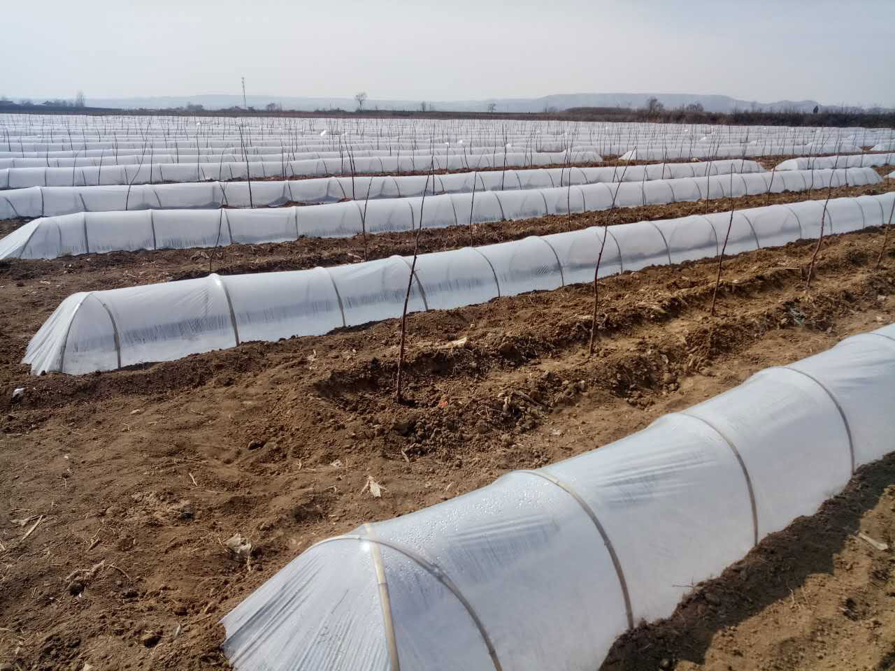

润农金服 | 前沿报道！新的一年耕种时节，种子领取！
2016年润农金服与山西晋运红种植公司达成合作协议，先后在山西、山东等地区的大大小小100多个村庄里签订了辣椒种植协议，前期由公司垫付种子、农药、化肥等农业物资，在种植过程中有公司的专业技术团队统一指导，辣椒成熟后有高于市面的保护价，公司统一收购，这一项惠农举措让农户由种植玉米每亩地纯收入1千元，变成种植辣椒每亩地纯收入3千元以上。
经历过去年种植辣椒的农户，今年纷纷扩大种植面积，去年没有参与的农户在今年也加入其中，现在马上到了耕种时节。润农金服的技术员们正在为农户分发辣椒种子。并开班培训班来教授农户的种植方法！
今年，为进一步帮助村里贫困群众找准好的项目，脱贫致富，山西陈村镇党委政府积极与北京润农金服公司、山西晋运红种植有限公司取得联系，引进了红辣椒种植项目，让贫困群众增加收入。
在山西陈村镇紫家村村民们高兴的来到村里的文化广场上，领取镇政府和润农金服为他们发放的红辣椒种子。
据了解，今年，陈村镇将发展种植红辣椒100亩，按每亩收入3000元，仅此一项可为当地村民增收30万元
育苗大棚：
 